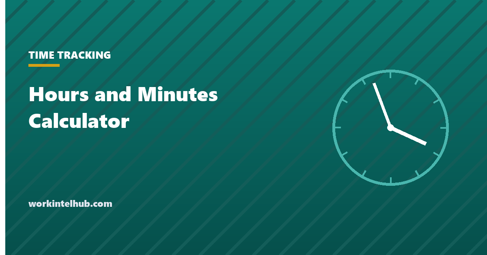

Hours and Minutes Calculator

Adding hours and minutes goes wrong for one reason: minutes are base 60 and calculators are base 10. Type 1.45 plus 2.30 into a phone and it says 3.75; the real answer is 4 hours 15 minutes, which is 4.25 in the decimal hours a payroll system wants. The calculator below adds any list of durations, subtracts one from another, finds the time between two clock times with a break removed, and converts either way, so the base-60 arithmetic never has to be done by hand.
The rest of the page shows the method for doing it by hand when needed, the minutes-to-decimal table, and the rounding rule US payroll is allowed to apply.
Hours and minutes calculator
Minutes are base 60, so 7:45 is 7.75 hours, not 7.45. Payroll systems use decimal hours; timesheets are usually written in hours and minutes; this converts between the two and adds either.
Doing it by hand
Adding. Add the hours and the minutes separately, then carry every 60 minutes into an hour. 1:45 + 2:30 + 0:50 is 3 hours and 125 minutes; 125 minutes is 2 hours 5 minutes; total 5:05.
Subtracting. If the minutes being subtracted are larger than the minutes you have, borrow an hour as 60 minutes. 8:00 − 0:45: borrow to make 7:60, subtract to get 7:15.
Between two clock times. Convert both to minutes since midnight, subtract, add 1,440 if the result is negative (the shift crossed midnight), then remove any unpaid break. 8:30 a.m. to 5:15 p.m. is 510 to 1,035 minutes, a difference of 525, less a 30-minute break is 495 minutes, which is 8:15 or 8.25 hours.
To decimal. Divide the minutes by 60 and add to the hours: 7:45 is 7 + 45 ÷ 60 = 7.75. From decimal, multiply the fraction by 60: 0.4 hours is 24 minutes. The conversion chart lists every minute value, and the hours calculator handles several shifts at once.
Minutes to decimal hours
| Minutes | Decimal | Minutes | Decimal | Minutes | Decimal |
|---|---|---|---|---|---|
| 5 | 0.08 | 25 | 0.42 | 45 | 0.75 |
| 10 | 0.17 | 30 | 0.50 | 50 | 0.83 |
| 15 | 0.25 | 35 | 0.58 | 55 | 0.92 |
| 20 | 0.33 | 40 | 0.67 | 60 | 1.00 |
Two decimals is the payroll convention. A third decimal changes pay by fractions of a cent per hour and is not worth the disagreement it causes on a printed timesheet.
Rounding, and what payroll may do
Federal regulations at 29 CFR 785.48 allow employers to round recorded time to the nearest five minutes, tenth of an hour or quarter hour, provided the rounding does not, over time, favour the employer. The quarter-hour rule is the common one: minutes 1 to 7 round down to the previous quarter, 8 to 14 round up to the next, which is why it is called the 7/8 rule. A clock-in at 8:07 rounds to 8:00; at 8:08 it rounds to 8:15. The rounding has to be applied evenly to arrivals and departures, and several states and recent court decisions have narrowed the practice where accurate records exist, so rounding is now more defensible as an exception than as a policy.
The calculator's decimal mode shows the quarter-hour rounded figure alongside the exact one. Where the exact figure is available, use it; the time card calculator works in exact minutes and applies overtime at the workweek level, which is where the rounding question usually ends up.
Key takeaways
- Minutes are base 60: 7:45 is 7.75 decimal hours, and adding h:mm on a normal calculator gives the wrong answer.
- Add hours and minutes separately and carry every 60 minutes; borrow 60 minutes when subtracting.
- Time between two clock times: convert to minutes since midnight, subtract, add 1,440 across midnight, remove the unpaid break.
- Divide minutes by 60 for decimal; multiply the decimal fraction by 60 for minutes. Two decimals is the payroll convention.
- Rounding to the quarter hour is allowed under federal rules only where it is neutral over time; use exact minutes where they exist.
Frequently asked questions
How do you add hours and minutes?
Add the hours together and the minutes together, then convert every 60 minutes of the minute total into an hour. 1:45 plus 2:30 is 3 hours and 75 minutes, which is 4 hours 15 minutes. The calculator on this page does it for any number of entries.
How do you convert hours and minutes to decimal?
Divide the minutes by 60 and add the result to the hours. 7 hours 45 minutes is 7 plus 0.75, so 7.75. Going the other way, multiply the decimal fraction by 60: 0.4 hours is 24 minutes.
Why does 7.45 not equal 7 hours 45 minutes?
Because 0.45 of an hour is 27 minutes. Decimal hours split the hour into 100 parts; clock time splits it into 60. Payroll uses decimal hours, so a timesheet written as 7:45 must be entered as 7.75.
How do you calculate hours worked between two times?
Turn each time into minutes since midnight, subtract the start from the end, add 1,440 if the shift crossed midnight, then subtract the unpaid break. 8:30 a.m. to 5:15 p.m. with a 30-minute break is 8 hours 15 minutes, or 8.25.
Can an employer round hours to the nearest quarter hour?
Under federal rules, yes, if the rounding is neutral over time: minutes 1 to 7 round down and 8 to 14 round up. Several states and courts have limited the practice where exact records exist, so most employers now pay to the minute.